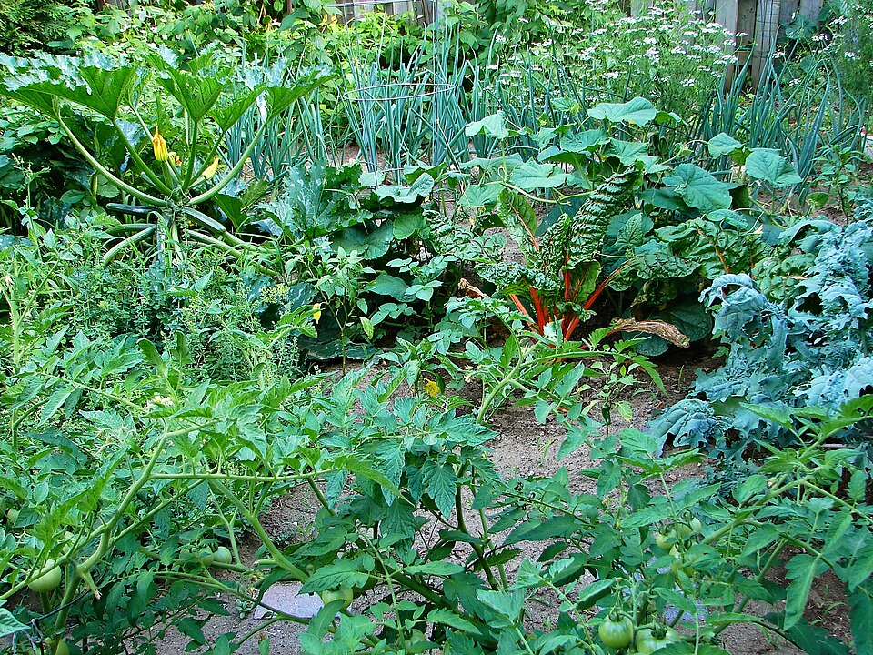

Sobre HuertoHogar
HuertoHogar es una tienda online dedicada a llevar la frescura y calidad de los productos del campo directamente a la puerta de nuestros clientes en Chile. Con más de 6 años de experiencia, operamos en más de 9 puntos a lo largo del país, incluyendo ciudades clave como Santiago, Puerto Montt, Villarica, Nacimiento, Viña del Mar, Valparaíso y Concepción.
Nuestra misión es conectar a las familias chilenas con el campo, promoviendo un estilo de vida saludable y sostenible, trabajando de la mano con agricultores y productores locales.
